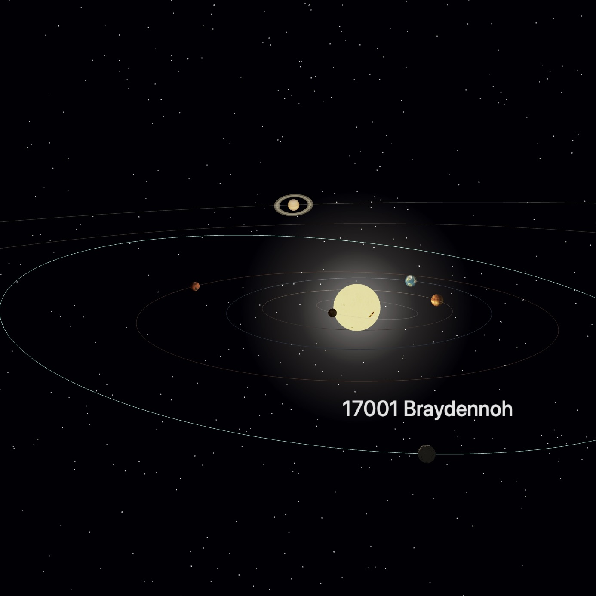

17001 Braydennoh (2020)
17001 Braydennoh (provisionally designated (17001) 1999 CT54) is an asteroid in the Solar System's asteroid belt. It was discovered by the LINEAR project on February 10, 1999.

NDVI Cities (2025)
Mapping two decades of greening and browning across American cities using satellite-derived NDVI trends, overlaid on OpenStreetMap road networks and building footprints.

Asteroids (2021)
Numerical simulations of asteroid impacts and atmospheric entry using iSALE, a Fortran-based hydrocode.